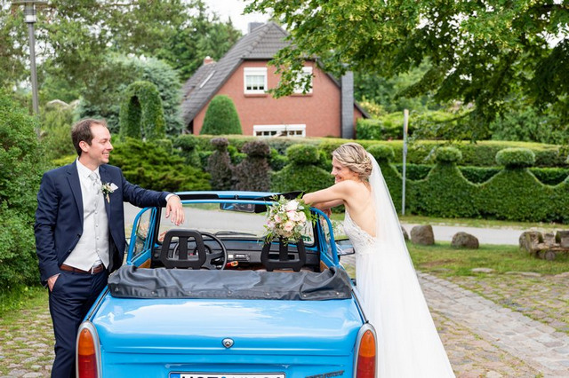

HEIRATEN IN ROSTOCK & AN DER OSTSEE
Ja, ich will.
Mit den Menschen, die zählen.
An einem Ort, der zu euch passt.
DER BLICK ÜBER DEN TELLERRAND
Die nächste gute Idee
wartet schon.

STIL / 2026 & 2027
Was kommt. Was zu euch passt.
Sechs recherchierte Hochzeitstrends – vom wandelbaren Kleid bis zur spontanen Partyaufnahme.
Die Trends entdecken ↗
UNTERWEGS / DACH & ITALIEN
Für gute Ideen darf es weiter gehen.
Zwölf Hochzeitsmessen, von Hamburg bis Rom. Mit Terminen und Links zu den Veranstaltern.
Messen & Termine ansehen ↗ZWEI TAGE FÜR EURE PLÄNE
HochzeitsMesse Rostock
30. Januar 2027 & 31. Januar 2027 · 10:00–18:00 Uhr
HanseMesse Rostock · Zur HanseMesse 1–2, 18106 Rostock
Alles zur Messe ↗Bis zum Messebeginn
Gedanken für euren Tag.

Planung
Erst der Ort.
Dann die Details.
Welche Fragen euch bei der Besichtigung wirklich weiterhelfen.
Weiterlesen ↗Stil & Ideen
Was zu euch passt, darf bleiben.
Neue Silhouetten und persönliche Details: Ideen für 2026 und 2027.
Weiterlesen ↗Aus dem Magazin
Brautstyling beginnt mit einem Gespräch.
Das vorhandene Interview mit Linda und Marko von HCT.
Weiterlesen ↗An der Küste
Ein guter Plan für Wind und Regen.
Damit eine Wetteränderung nicht den ganzen Tag verändert.
Weiterlesen ↗02 / UNSERE REGION
Heiraten in Rostock
und an der Ostsee.
Mitten in der Stadt, am Wasser oder zwischen alten Bäumen: Findet heraus, welcher Ort zu eurem Fest passt.
Ein Schritt nach dem anderen.
Die passenden Dienstleister.
05 / ECHTE HOCHZEITEN
Ein ganzer Tag.
Eine eigene Geschichte.
Eine Reportage zeigt auch das Dazwischen: Ankommen, Warten, Umarmungen und den Weg zur Feier. Hier bekommen vollständige Hochzeiten aus der Region ihren Platz.
Aktuell ist noch keine vollständige Reportage im Magazin veröffentlicht.
Über unsere Hochzeitsreportagen ↗

DIE MENSCHEN HINTER DEN BILDERN
Martens & Martens
Katrin und Holger begleiten Hochzeiten mit Fotografie und Film. Ihr Blick auf die Region gehört auch zu diesem Magazin: Katrin Witt-Martens ist seine Herausgeberin.
Reportagen, Paarporträts und Hochzeitsfilme aus Rostock und von der Ostsee.
Fotografie & Film kennenlernen ↗Einblicke in die Arbeit der Herausgeberin und ihrer Marke.
Zum Blättern. Zum Behalten.
VON HIER. FÜR EUCH.
Willkommen im Hochzeitsmagazin Rostock.
Wir sammeln Orte, Menschen und praktische Fragen, die bei einer Hochzeit in unserer Region wichtig werden. Nehmt euch mit, was zu euren Plänen passt.
Katrin Witt-Martens & das Magazin ↗Ihr Unternehmen gehört in dieses Umfeld?
Print & digitale Werbeformen entdecken ↗